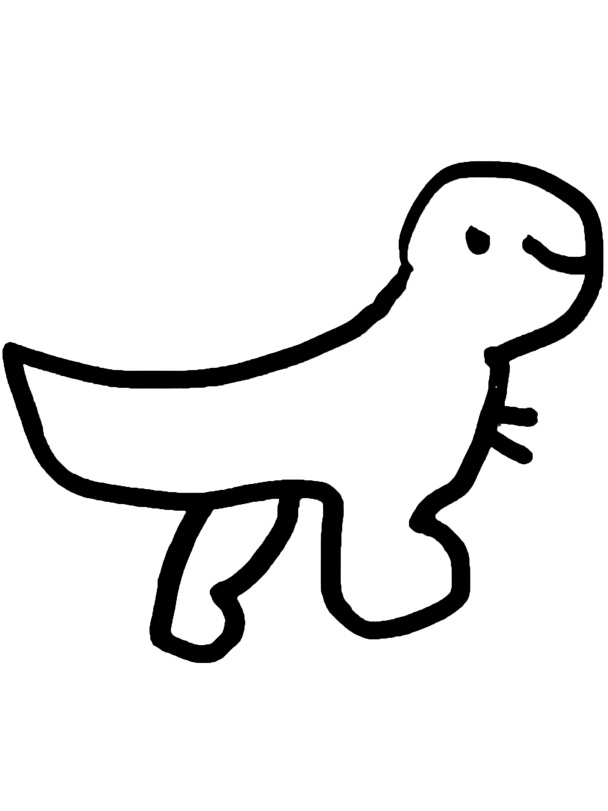

童创 ART WORKSHOP
TONGCHUANG MATERIAL WORLD
Work Tables
每一个主题，都像一张正在被使用的工作台。

LESSON 01
第1课｜创作自己的小森林
从一块地面开始，搭建树、洞口、路径和可以停留的地方。
FOREST BUILDING

LESSON 14
第14课｜雨水
用水、蓝色、棉花和声音，创造一场属于自己的雨。
RAIN SYSTEM

LESSON 18
第18课｜飞起来
做一个离开地面的东西，给它方向、理由和一点点风。
FLYING OBJECTS
全部 19 个主题
保留完整课件结构，作为工作室档案继续阅读。
01
创作自己的小森林栖息｜构筑｜根系｜自由生长
02
创作自己看到的天空仰望｜变幻｜情绪的色彩｜瞬间
03
我的奇妙院子私密｜建造｜生活感｜童年精神地图
04
蔬菜王国变形｜角色想象｜图像建构｜趣味翻转
05
动物王国拟像观察｜感官比喻｜想象生态｜自我投射
06
藏在花朵里的世界分层结构｜情感容器｜微观世界｜绽放与隐匿
07
植物拓染痕迹｜生命纹理｜感官观察｜再创造
08
生日景观庆祝｜愿望具象化｜空间营造｜童年仪式
09
城市绘制集体构想｜地图语言｜结构构建｜社会观察
10
天气制造局模拟｜自然现象｜幻想科学｜艺术实验
11
杯子里的大世界微观｜容器｜缩小视角｜梦境构建
12
逛超市的小动物角色扮演｜生活观察｜小剧场｜拟人化
13
开个大派对庆祝｜场景构造｜抽象寓意｜集体叙事
14
雨水流动｜情绪共鸣｜时间痕迹｜自然节奏
15
给自己设计玩具功能想象｜结构构造｜情感投射｜游戏精神
16
藏宝盒私密｜叙事装置｜物件的意义｜记忆拼贴
17
我的梦潜意识｜夜的图像｜自我象征｜模糊叙事
18
飞起来飞行｜想象的物理学｜离地感｜创造性迁移
19
自己的肖像自我表达｜非写实｜象征与比喻｜身份感
这里没有标准答案。
孩子会用纸板、石膏、树枝、棉花，把脑子里的东西慢慢变成真实存在的世界。
有时是森林，有时是天气，有时只是一个没人见过的小角落。
我们更在意：他们如何观察、如何搭建、如何让一个想法慢慢出现。
ART WORKSHOP，不是美术班。
我们更在意孩子如何使用材料，如何观察，如何把一个还不存在的东西慢慢做出来。这里保留过程、保留痕迹，也保留每一个主题最后形成的世界。